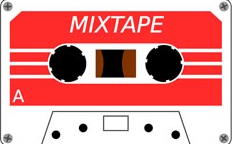

CRISE EXISTENCIAL

01. Waves - Dean Lewis
02. Broken - Isak Denielson
03. Face My Fears - Isak Denielson
04. Train Wreck - James Arthur
05. Arcade - Duncan Laurence
06. The Night We Met - Lord Huron
07. Million Years Ago - Adele
08. I Lost A Friend - Finneas